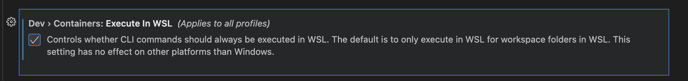

- 🛠️ Vscode hints
- 🔄 multicurseur pour remplacer des variables par ex
- 📋 multicurseur sur chaque ligne d'un texte
- 🙈 cacher un repertoire du workspace (par exemple pycache)
- ⌨️ ctrl-c ctrl-v dans le terminal
- 🔌 ajouter des sources pour pylance
- 🐍 tester un petit code python en REPL
- 📝 editer des fichiers markdown
- 📦 utiliser dev container
🛠️ Vscode hints¶
🔄 multicurseur pour remplacer des variables par ex¶
sur le mot Ctrl-d autant de fois que le nombre de variable à remplacer 💡
📋 multicurseur sur chaque ligne d'un texte¶
(pour inserer un > par ex en debut de ligne) ➡️
selection du texte puis Shift-Alt-i 👉
🙈 cacher un repertoire du workspace (par exemple pycache)¶
ouvrir settings.json : Ctrl-Shift-p et taper Preferences: Open Settings (JSON) ⚙️
ajouter une entree dans files.exclude ➕
"files.exclude": {
"**/.git": true,
"**/__pycache__": true,
"**/.ipynb_checkpoints": true,
"**/.venv": true,
},
⌨️ ctrl-c ctrl-v dans le terminal¶
Go to ‘Preferences > Keyboard Shortcuts’
Set the ‘Terminal: Copy Selection’ keybindings to Ctrl-C
Set the ‘Terminal: Paste into Active Terminal’ keybinding to Ctrl-V
And that seemed to be that. When there is a selection Ctrl-C will copy without sending SIGINT and if there is no selection VS Code sends a SIGINT 💡
🔌 ajouter des sources pour pylance¶
ouvrir settings.json : Ctrl-Shift-p et taper Preferences: Open Settings (JSON) ⚙️
ajouter une entree dans python.analysis.extraPaths ➕
"python.analysis.extraPaths": [
"./nbs"
],
🐍 tester un petit code python en REPL¶
You can open the Native REPL via the Command Palette (Ctrl+Shift+P) by searching for Python: Start Native REPL. Furthermore, you can send code to the Native REPL via Smart Send (Shift+Enter) and Run Selection/Line in Python REPL by setting
"python.REPL.sendToNativeREPL": truein your settings.json file. 🚀
ca fait tourner un notebook Untitled-1.ipnb juste a cote. 🔍
📝 editer des fichiers markdown¶
📦 utiliser dev container¶
Ressources: 📚
- vscode doc website Create a dev container 📖
- youtube Get Started with Dev Containers in VS Code 🎥
- youtube Beginner's Series to: Dev Containers 🎬
Etapes: 📝
- installer
dev containersextension ⬇️ - palette:
Dev Containers: Add Dev Container Configuration Files...using ms-python3,Reopen in Container🎨 - extensions: les extensions installees localement qui m'interessent pour ce projet,
Manage > Add to devcontainer.json, et en sauvant je rebuilde le container 🔧 - requirements: les lib python necessaires pour ce projet 📌
- postCommand.sh: j'installe cmake et dbus (pour supprimer la mise en veille), la locale fr_FR.UTF-8 pour la conversion de dates, les libs python, pre-commit et le safe.directory git (car les utilisateurs host et docker sont differents) ⚡
- runArgs: 🚀
--network=hostpour acceder au container depuis le host (pour streamlit) 🌐--label com.centurylinklabs.watchtower.enable=falsepour exclure le container de la mise a jour watchtower 🚫--env CONTAINER_NAME=vscode-dev-container-lmelppour retrouver le nom du container depuis un script execute depuis host 🆔- forwardPorts pour acceder a streamlit 🔀
- shutdownAction a "none" pour empecher que le container ne s'arrete a la sortie de vscode (utile pour lancer les scripts ou streamlit) 🛑
A chaque modification, faire un Dev Containers: Rebuild Container.
Depuis Windows+WSL, il faut activer Dev>Containers: Execute in WSL, cela utilisera le docker de WSL et pas le docker Windows (que je n'ai pas) 🐳

Voir dans .devcontainer pour le detail. 📂